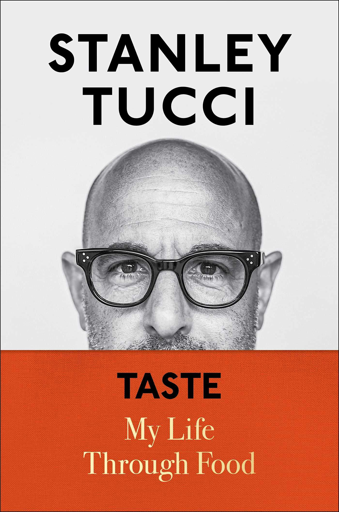

Taste: My Life Through Food
By Stanley Tucci
Stanley Tucci is an American actor and filmmaker known for his role in The Devil Wears Prada and as host of Stanley Tucci: Searching For Italy. Recently, I read his memoir that covers how food has influenced his life from birth to present day. I loved how he incorporated authentic Italian recipes with emotive anecdotes. After reading the book, I tried the Spaghetti Aglio e Olio recipe, and it was delicious. I'd reccommend this book to anyone who is looking for a comforting read that will leave them hungry for more!
"It's impossible to read this without becoming ravenous!"
- Nigella Lawson
"A delicious story of appetite, family, and pasta. A serious amount of pasta. In this gloriously written memoir, the ever tasteful Stanley Tucci invites us to his table and feeds us all the good stuff."
- Jay Rayner